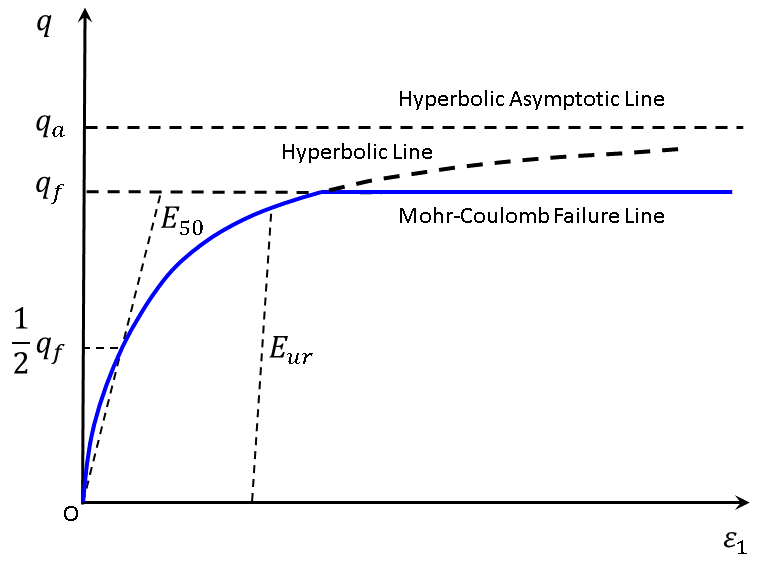
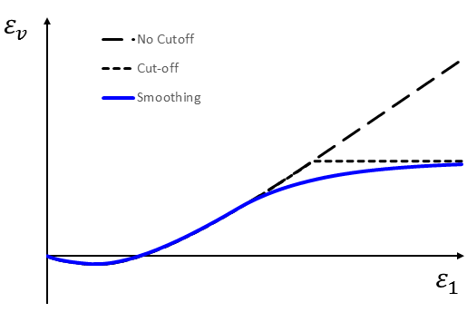
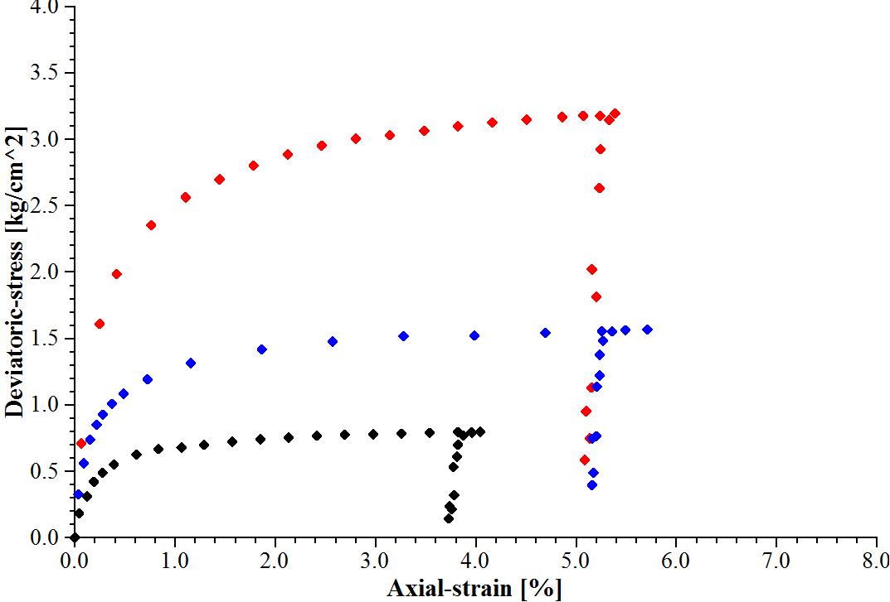
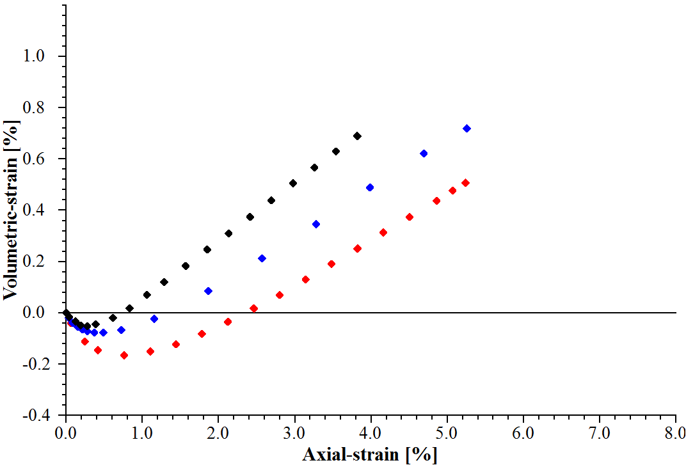
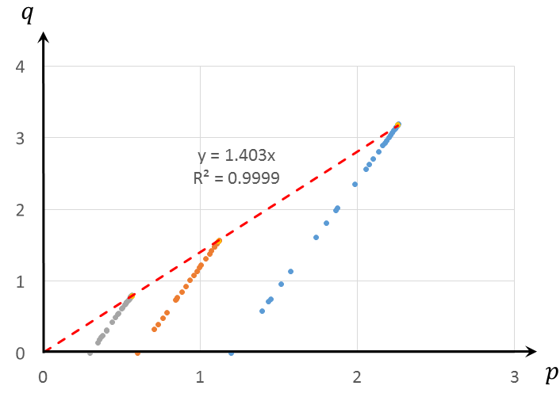
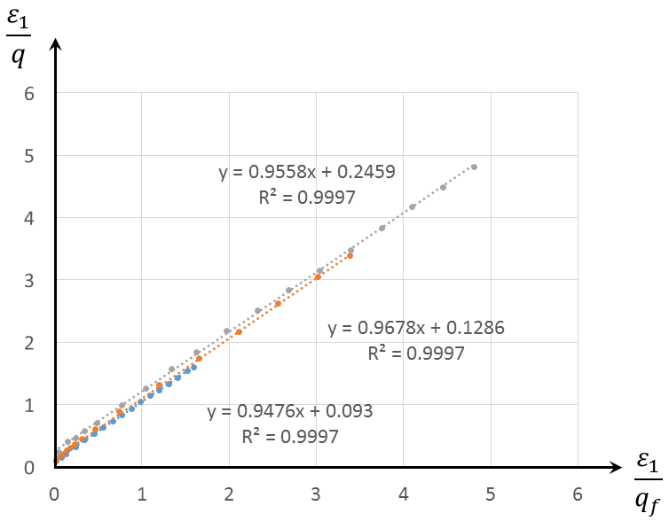
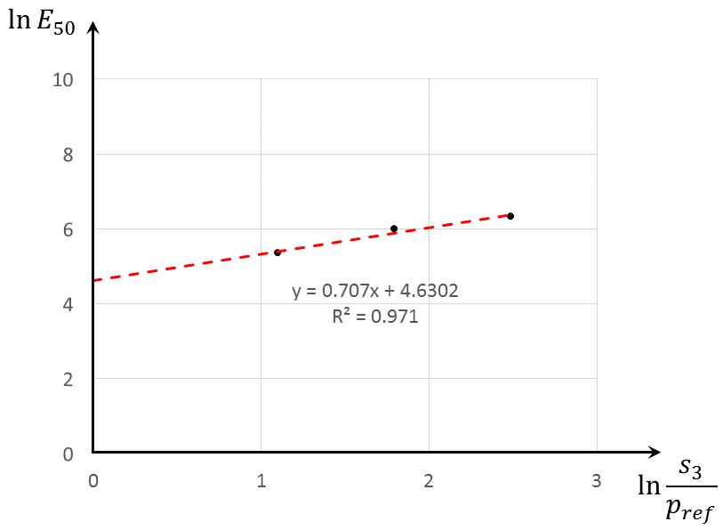
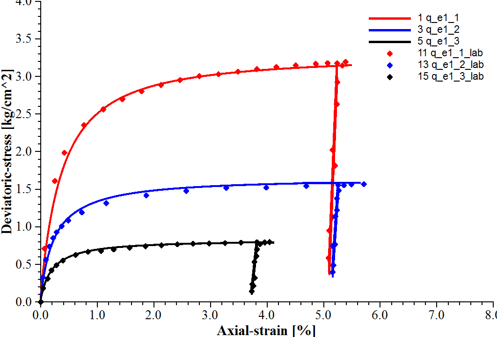
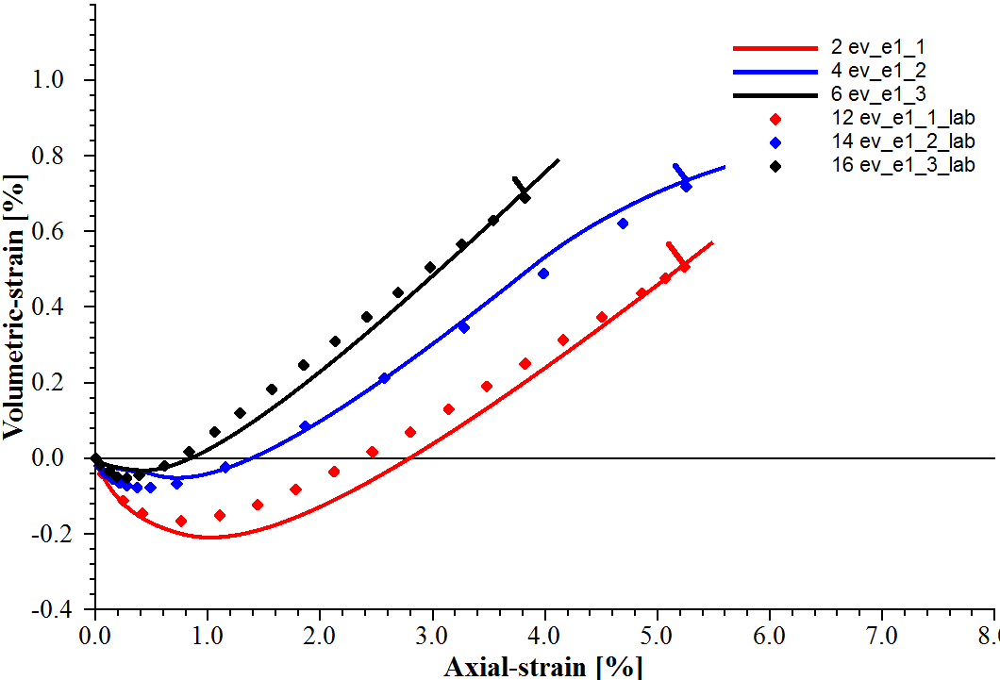
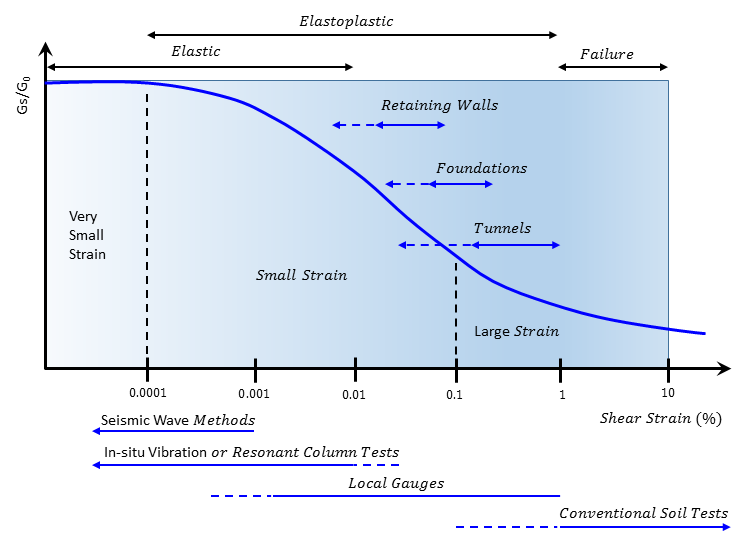

Plastic-Hardening (PH) Model*
注意
*本模型仅在 FLAC3D 中提供。
塑性硬化（PH）模型是用于模拟土体性状的剪切与体积硬化本构模型。在承受偏应力加载时（例如常规排水三轴试验中），土体通常表现为刚度下降并伴随不可恢复变形。多数情况下，排水三轴试验所得偏应力对轴应变的曲线可近似为双曲线。Duncan 与 Chang（1970）在其著名的“双曲线土”模型中讨论了该特性，该模型以非线性弹性模型表述。PH 模型在硬化塑性理论框架内表述（Schanz 等 1999），从而消除了原始非线性弹性模型表述的主要缺陷（例如加载/卸载模式的判别、非物理的体积模量）。
PH 模型的主要特性为：
- hyperbolic stress-strain relationship during axial drained compression;
- plastic strain in mobilizing friction (shear hardening);
- plastic strain in primary compression (volumetric hardening);
- 按幂律随应力变化的弹性刚度；
- 弹性卸载/再加载相对原始加载；
- 先期固结应力的记忆；以及
- Mohr-Coulomb 破坏准则。
该模型用常规室内试验或原位试验都易于标定。它在土-结构相互作用、开挖、隧道与沉降分析等众多应用中已得到充分验证。
公式
本节中主应力 \(\sigma_i\) 与应变 \(\varepsilon_i\)（i = 1,3）分量以拉为正。此外，除非明确说明，所有应力默认为有效应力。主有效应力按 \(\sigma_1 \le \sigma_2 \le \sigma_3\) 排序，\(\sigma_1\) 为压性最大的应力。
增量弹性定律
PH 模型采用亚弹性描述弹性行为，
其中 \(p\) 为平均压力，定义为 \(p = − \sigma_{ii}/3\)；\(\epsilon^e_v\) 为体积弹性应变，定义为 \(\epsilon^e_v = \varepsilon^e_{ii}\)；\(s_{ij} = \sigma_{ij} + p \delta_{ij}\) 与 \(\epsilon_{ij} = \varepsilon_{ij} - (\epsilon_v/3)\delta_{ij}\) 分别为偏应力张量与偏弹性应变张量。\(\delta_{ij}\) 定义为：当 \(i = j\) 时为 \(\delta_{ij} = 1\)，当 \(i \ne j\) 时为 \(\delta_{ij} = 0\)。\(K\) 与 \(G\) 为弹性体积模量与剪切模量，可由卸载-再加载杨氏模量 \(E_{ur}\) 与卸载-再加载泊松比 \(\nu\) 通过以下关系得到：
PH 模型中泊松比假定为常数，典型值 0.2（若输入时未提供）。
杨氏模量为应力相关参数：
其中
而 \(E^{ref}_{ur}\)、\(m\)、\(c\)、\(p^{ref}\) 与 \(\phi\) 为用户定义常数参数。\(E^{ref}_{ur}\) 为参考压力 \(p^{ref}\) 下的参考卸载-再加载刚度模量。当前卸载-再加载刚度模量 \(E_{ur}\) 取决于最大（最小压缩）主应力 \(\sigma_3\)、黏聚力 \(c\)、极限摩擦角 \(\phi\) 以及幂次 \(m\)。对黏土，\(m\) 通常接近 1；对砂土，\(m\) 通常在 0.4 到 0.9 之间。默认截止因子 \(f_{cut}\) 为 0.1。
PH 模型还采用附加刚度度量 \(E_{50}\)，它定义双曲线应力-应变曲线的初始斜率（见公式 (7) 与 图 1（Figure 1））。参数 \(E_{50}\) 服从以下幂律：
此处 \(E^{ref}_{50}\) 为材料参数，可由一组不同围压的三轴压缩试验估算。
剪切屈服准则与流动法则
决定剪切硬化起始与发展的剪切屈服函数定义为
其中 \(\gamma^p\) 为剪切硬化参数（内部变量之一），由 (13) 定义，\(E_i = 2 E_{50} / (2 − R_f)\)、\(q = \sigma_3 − \sigma_1\) 与 \(q_a\) 给出为
其中
破坏比 \(R_f = q_f / q_a\) 取值小于 1（通常取 \(R_f\) = 0.9）。注意极限偏应力 \(q_f\) 定义为
与 Mohr-Coulomb 破坏准则一致（图 1（Figure 1））。
对标准排水三轴试验，轴向（竖向压缩）应变 \(\varepsilon_1\) 与偏应力 \(q\) 之间的关系可用双曲线关系描述：
公式 (12) 在 图 1（Figure 1） 中以 \(q_f\) 处的截止加以图示。


图 1：初始剪切加载中的双曲线应力-应变关系。
剪切硬化参数 \(\gamma^p\) 的定义使其增量形式为：
由于 \(\gamma^p\) 增大，剪切屈服面将扩展至极限面，后者由常规 Mohr-Coulomb 破坏准则定义。若材料达到极限剪切破坏，则适用常规 Mohr-Coulomb 破坏准则。
PH 模型在体积塑性应变与剪切塑性应变之间采用以下流动法则：
其中 \(\sin \psi_m\) 为发挥剪胀角，其值应小于或等于用户定义的极限剪胀角 \(\psi\)。发挥剪胀角基于 Rowe 剪胀法则（1962）：
其中参数 \(F_c\) 为收缩比例因子，允许范围 0 到 0.25；对不考虑收缩的大多数土体默认值为 0.0。临界状态摩擦角 \(\phi_{cv}\) 定义为
发挥摩擦 \(\phi_m\) 由当前应力状态定义为
模型采用与 Mohr-Coulomb 屈服准则一致的非关联流动法则。剪切势函数定义为
其中 \(m_1 = (-1+\sin \psi_m)/2\) 与 \(m_3 = (1+\sin \psi_m)/2\)。
为避免土体在 \(e_{max}\) 处达到临界孔隙状态时过度剪胀，需对剪胀角作小幅修正。Schanz 等（1999）提出的一种方式是设置截止规则，使
此处引入一种平滑技术，以避免剪胀角突变：
图 2（Figure 2） 示意比较了带截止、平滑技术以及无剪胀截止的剪胀规则。

图 2：标准三轴压缩试验的体积应变曲线，含剪胀截止与平滑。
体积帽盖准则与流动法则
体积（帽盖）屈服函数定义为
其中 \(\alpha\) 为由其他材料参数基于虚拟（数值）固结仪试验内部导出的常数，\(\tilde{q}\) 为剪应力度量，定义为 \(\tilde{q} = − [\sigma_1 + (\delta - 1)\sigma_2 − \delta \sigma_3]\)，且 \(\delta = (1 + \sin \phi)/(1 − \sin \phi)\)。硬化参数 \(p_c\)（表示先期固结压力）的初值可用初始应力状态与超固结比 \(OCR\) 确定，使
若 \(OCR\) 取值很大，则模型表现为不存在帽盖。体积硬化采用关联流动法则，即假定体积势函数与体积屈服函数相同（见公式 (24)）。
体积硬化参数 \(\gamma^v\)（内部变量之一）的增量定义为
其中 \(\Delta \varepsilon^p_v\) 为体积塑性应变增量。
硬化参数 \(p_c\) 的演化由以下关系给出：
其中 \(H_c\) 为可由其他材料参数内部导出的常数参数。另一种做法是不把 \(\alpha\) 与 \(H_c\) 作为输入材料参数，而指定另外两个参数 \(K_{nc}\) 与 \(E^{ref}_{oed}\) 作为输入。参数 \(K_{nc}\) 表示正常固结系数，\(E^{ref}_{oed}\) 表示参考压力 \(p^{ref}\) 下的切线固结仪刚度。若用户未提供 \(K_{nc}\)，则取 \(K_{nc} = 1 − \sin \phi\)（默认值）。PH 模型保留灵活性，允许用户输入自定义的 \(\alpha\) 与 \(H_c\)，而不使用内部计算的 \(\alpha\) 与 \(H_c\)。对多数土体，\(\alpha\) 的典型值在 0.6 到 2.0 之间。参数 \(H_c\) 按下式计算：\(H_c = k K_p\)，其中 \(k\) 为修正因子，典型值 \(0 < k \le 1\)，\(K_p = K_1 K_2 / (K_1 - K_2)\)，\(K_1 = E^{ref}_{ur} / [3(1-2\nu)]\)，且 \(K_2 = E^{ref}_{oed} (1 + 2 K_{nc})/3\)。具体而言，等向压缩状态下 \(k\) = 1。
拉伸屈服准则与流动法则
模型检查拉伸破坏条件。拉伸破坏函数与势函数为
其中 \(\sigma^t\) 为拉伸极限。默认情况下 \(\sigma^t\) 为零，用户可给出上限为 \(c/\tan \phi\) 的取值。该模型不考虑拉伸硬化。
塑性修正
在 PH 模型的实现中，先由旧应力 \(\sigma^o_{ij}\) 加上用该步总应变增量 \(\Delta \varepsilon_{ij}\) 计算的弹性增量，得到弹性试探应力 \(\sigma^I_{ij}\)（见式 (1.395)）。该步中为简便起见假定模量与发挥剪胀角为常数，并依据旧应力分量计算。所有应力均假定为有效应力。
主轴中试探应力（以上标 \(I\) 表示）的公式为：
其中 \(\alpha_1 = K +4G/3\)、\(\alpha_2 = K −2G/3\)、\(K\) 与 \(G\) 分别为切线弹性体积模量与剪切模量，而 (\(\Delta \varepsilon_1, \Delta \varepsilon_2, \Delta \varepsilon_3\)) 为主应变增量集合。
试探内部变量 \(\gamma^p\) 与 \(\gamma^v\) 取上一步的值。若超越硬化屈服准则（公式 (8) 和/或 (22)），则按下文说明同时修正应力分量与内部变量。
首先考虑仅发生剪切硬化的情形 \(f^s > 0\)。塑性应变增量在主应力空间中沿势函数梯度方向定向。利用公式 (19)，可得
剪切硬化参数增量由公式 (13) 得到，
于是修正后（新）的应力分量为：
修正后的内部变量为
利用公式 (30) 以及公式 (19) 中的定义 \(m_1\) 与 \(m_2\)，按下式计算更新后的剪应力与参数 \(q_a\)（见公式 (9)）
把修正后的参数 \(q\)、\(q_a\)、\(\gamma^p\) 代入公式 (8) 后，可用迭代法求解非线性方程 \(f^s(\lambda^s)\) = 0 得到参数 \(\lambda^s\)。注意公式 (31) 中的 \(\gamma^p\) 使用每个迭代步所更新的 \(\lambda^s\) 当前值，这意味着修正算法是半隐式的。
若试探剪应力超过 Mohr-Coulomb 剪切破坏面，则适用 Mohr-Coulomb 模型（Mohr-Coulomb model） 实现中所用的修正。
现考虑弹性试探（公式 (22)）超过体积屈服判据 \(f^v > 0\)、发生体积硬化的情形。塑性应变增量与应力空间中势函数梯度的关系为
硬化参数 \(\gamma^v\) 的演化由以下关系给出：
上述表述中，塑性应变与体积硬化参数增量都与当前应力度量（\(p\) 或 \(\tilde{q}\)）相关，因此修正算法再次采用半隐式方法。
修正后的应力分量按与剪切硬化类似的方式得到，
注意到 \(p^{I} = −(\sigma_1 + \sigma_2 + \sigma_3)/3\) 与 \(\tilde{q}^{I} = − [\sigma_1 + (\delta - 1)\sigma_2 − \delta \sigma_3]\)，并利用公式 (36)，可得
其中 \(M = 4G(\delta^2 − \delta + 1) / \alpha^2\)。把修正后的 \(p\) 与 \(\tilde{q}\) 代入屈服函数 \(f^v\)（公式 (22)）后，可用迭代法求非线性方程 \(f^v(\lambda^v)\) = 0 的最小根，从而得到参数 \(\lambda^v\)。
最后考虑弹性试探应力同时超过剪切屈服硬化面与体积屈服硬化面的情形。此时塑性应变增量与势函数偏导数的关系如下：
参数 \(\gamma^s\) 与 \(\gamma^v\) 可用类似于剪切或体积硬化修正技术所采用的迭代方法求得。若试探应力同时超出体积硬化面与 Mohr-Coulomb 破坏面，则应使用 Mohr-Coulomb 破坏函数而非剪切硬化函数。
实现步骤
在初始化步中，为网格单元定义初始应力、可 \(\gamma^v\) 的演化参数 \(\gamma^s\) 与应变增量，并假定在该步内保持不变。为简便起见，依赖当前应力与演化参数的刚度模量与剪胀也假定在该步内于网格单元中保持不变。试探弹性应力与可能的应力修正在子网格单元层面定义。试探应力增量服从线性弹性（虎克）法则。若试探应力超过拉伸极限，则调用拉伸破坏流程。下一步检查拉伸修正后的应力处于受拉侧还是受压侧。若修正后应力为拉伸，则不施加体积硬化。无论哪一侧，若应力超出剪切破坏面或剪切屈服面，则分别调用剪切破坏或剪切硬化流程。在受压侧，若应力超出体积屈服面，则调用体积硬化流程。特别地，若应力同时超出剪切破坏面或剪切屈服面，则调用同时施加体积硬化与剪切破坏/硬化修正的混合流程。为确保网格单元层面的平均应力处于拉伸极限内，若发生任何体积硬化或剪切硬化/破坏，则再次调用拉伸破坏流程。所有子网格单元完成拉伸与剪切破坏、剪切与体积硬化判据的应力检查后，依据网格单元平均应力更新内部变量、刚度模量与剪胀。实现细节见 Cheng 与 Detournay（2016）。
PH 模型与 CYSoil 模型的比较
PH 模型与 CYSoil 模型有许多相似特性。例如两者模量都是应力相关的，都有初级剪切与体积硬化，三轴压缩时偏应力对轴应变都采用双曲线关系，两模型的体积屈服函数与势函数也相同等。不过两模型之间也存在一些差别，概述如下。
- 对初始剪切，CYSoil 模型采用与发挥摩擦角相关的 Mohr-Coulomb 型屈服函数，而 PH 模型采用公式 (19) 所述的屈服函数。
- CY 模型把累积塑性剪应变作为演化参数之一（\(\gamma^p\)），而 PH 模型中 \(\gamma^p\) 的定义不同于塑性剪应变（见公式 (13)）。
- CYSoil 模型的模量取决于平均压力，而 PH 模型的模量取决于最大主应力（压性最小）。
- PH 模型引入模量 \(E_{50}\) 以确定三轴压缩时双曲线的初始斜率，而 CYSoil 模型没有该模量；这意味着尽管极限剪应力相同，两模型在排水三轴压缩过程中可能具有不同的双曲线。
- CYSoil 模型中参数 \(\alpha\) 由用户定义，而 PH 模型中该参数可用其他输入参数在内部计算。
- CYSoil 模型假定在任何压力的等向压缩过程中弹性与塑性体积应变之比为常数，而 PH 模型不采用该假定。因此 PH 模型使用公式 (25) 给出的硬化法则。
- PH 模型的多数学参可通过常规三轴与固结仪压缩试验标定（见下一节关于标定的内容），而 CYSoil 模型参数的标定更为繁复。
- CYSoil 模型中许多参数可通过表格输入。目前 PH 模型不具备该灵活特性。
用室内试验数据标定材料参数
本节介绍用常规岩土室内试验标定 PH 模型材料参数的方法。标定算例采用 Monterey 砂三轴压缩试验的原始试验结果（Lade 1972）。该三轴试验先对试样加载，随后进行卸载-再加载。原始试验数据见 图 3（Figure 3） 与 4。数据来自三组三轴压缩试验，围压分别为 1.2、0.6 与 0.3 kgf/cm2，初始孔隙比分别为 0.783、0.786 与 0.781。


图 3：Monterey 砂三轴压缩试验在围压 1.2、0.6 与 0.3 kgf/cm2 下的原始 \(q\) 对 \(\varepsilon_1\) 曲线（Lade 1972）。


图 4：Monterey 砂三轴压缩试验在围压 1.2、0.6 与 0.3 kgf/cm2 下的原始 \(\varepsilon_v\) 对 \(\varepsilon_1\) 曲线（Lade 1972）。
摩擦角的标定 \(\phi\) 与黏聚力 \(c\)：
这两个参数的标定与 Mohr-Coulomb 模型没有区别。
用 \(q = \sigma_3 - \sigma_1\) 对 \(p = -(\sigma_1 + 2\sigma_3)/3\) 的关系由三轴试验数据估算摩擦角 \(\phi\) 与黏聚力 \(c\)，请按以下步骤进行。
- 用三轴压缩试验的室内数据绘制偏应力 \(q\) 对 \(p\) 的关系曲线。
- 用趋势线拟合 Mohr-Coulomb 包络。
- 趋势线斜率为 \(6 \sin \phi / (3 − \sin \phi)\)，它来自 Mohr-Coulomb 破坏准则的一种替代形式。由此确定摩擦角 \(\phi\)。
- 趋势线截距为 \(6c \cos \phi / (3 − \sin \phi)\)，由此确定黏聚力 \(c\)，因为摩擦角 \(\phi\) 已由上一步得知。
或者，可按以下步骤用 \(\hat{q} = (\sigma_3 - \sigma_1)/2\) 对 \(\hat{p} = -(\sigma_1 + \sigma_3)/2\) 的关系由三轴试验数据估算这两个参数。
- 用三轴压缩试验的室内数据绘制偏应力 \(\hat{q}\) 对 \(\hat{p}\) 的关系曲线。
- 用趋势线拟合 Mohr-Coulomb 包络。
- 趋势线斜率为 \(\sin \phi\)，它来自 Mohr-Coulomb 破坏准则的一种替代形式。由此确定摩擦角 \(\phi\)。
- 趋势线截距为 \(c \cos \phi\)，由此确定黏聚力 \(c\)，因为摩擦角 \(\phi\) 已由上一步得知。
对 Monterey 砂，用 图 5（Figure 5） 所示的 \(q\) 对 \(p\) 关系得到的 Mohr-Coulomb 包络趋势线斜率为 1.403。据此算得摩擦角为 34.65 度。截距近似为零，意味着黏聚力为零。


图 5：由三轴压缩试验数据确定摩擦角与黏聚力。
标定 \(R_f\)、\(m\) 与 \(E^{ref}_{50}\)：
由三轴试验数据估算 \(R_f\)、\(m\) 与 \(E^{ref}_{50}\) 的值，请按以下步骤进行。
- 用三轴压缩试验数据绘制 \(\varepsilon_1/q\) 对 \(\varepsilon_1/q_f\) 的关系曲线。
- 用趋势线拟合数据。依据关系 \(\varepsilon_1/q = R_f (\varepsilon_1/q_f) + 1/E_i\)（由公式 (12) 与 \(R_f = q_f / q_a\) 导出），该直线的斜率为 \(R_f\)，截距为 \(1/E_i\)。
可用多组不同围压的三轴压缩试验产生一组 (\(R_f\), \(E_{50}\)) 值对。最终的 \(R_f\) 可取平均值估计，而 (\(E_i\), \(\sigma_3\)) 值对依据公式 (7) 确定 \(m\) 与 \(E^{ref}_{50}\)。
图 6（Figure 6） 用围压 1.2、0.6 与 0.3 kgf/cm2 下 Monterey 砂的三轴压缩试验数据绘制 \(\varepsilon_1/q\) 对 \(\varepsilon_1/q_a\) 的曲线。这些直线的斜率为 \(R_f\)，截距为 \(100/E_i\)（因应变以百分数给出）。
该图确定三对 (\(R_f\), \(E_{50}\))，汇总于 表 1（Table 1）。\(R_f\) 的平均值为 0.957。参数 \(p^{ref}\) 无需标定，其值假定为 0.1 kgf/cm2。最后，绘制参数 \(\ln (−\sigma_3/p^{ref})\) 对 \(\ln (E50)\) 的关系（如 图 7（Figure 7） 所示）并用公式 (7)，即可确定 \(m\) 与 \(E^{ref}_{50}\)（注意本例中黏聚力 \(c\) = 0）。图 7（Figure 7） 中趋势线斜率为 \(m\) = 0.707，截距确定 \(E^{ref}_{50}\) = \(\exp{}\)（4.63）= 102.5 kgf/cm2。
| \(\sigma_3\) | \(R_f\) | \(1/E_i\) | \(E_i\) | \(E_{50}\) | \(\ln (E_{50})\) | \(\ln \left( {c \cot \phi - \sigma_3} \over {c \cot \phi + p^{ref}} \right)\) |
| -0.3 | 0.9558 | 0.002459 | 406.7 | 212.3 | 5.358 | 1.099 |
| -0.6 | 0.9678 | 0.001286 | 777.6 | 401.3 | 5.995 | 1.792 |
| -1.2 | 0.9476 | 0.000930 | 1075.3 | 565.8 | 6.338 | 2.485 |


图 6：由三组不同围压下三轴压缩试验确定 \(R_f\) 与 \(1/E_i\)。


图 7：由三组不同围压下三轴压缩试验确定 \(m\) 与 \(E^{ref}_{50}\)。
标定 \(E^{ref}_{ur}\)：
参数 \(m\) 标定后，可利用三轴压缩试验中由原始 \(q\) 对 \(\varepsilon_1\) 数据所得的卸载-再加载模量 \(E_{ur}\)，由公式 (5) 直接得到 \(E^{ref}_{ur}\)。\(E^{ref}_{ur}\) 的最终值可用不同围压的数据取平均。以 Monterey 砂为例，\(E^{ref}_{ur}\) 确定为 320.0 kgf/cm2。若没有卸载-再加载模量，对多数土体可取 \((3 \sim 5) E^{ref}_{50}\) 范围内的值。若未提供 \(E^{ref}_{ur}\) 的输入，PH 模型使用默认值 \(4 E^{ref}_{50}\)。
剪胀角的标定 \(\psi\)：
极限剪胀角 \(\psi\) 可估算为 \(\sin \psi = s_m / (s_m+2)\)，其中 \(s_m\) 为三轴压缩试验中 \(\varepsilon_v\) 对 \(\varepsilon_1\) 曲线的最大斜率（\(s_m\)）。斜率 \(s_m\) 按下式求得：\(s_m = -\Delta \varepsilon_v/\Delta \varepsilon_1 \approx -\Delta \varepsilon^p_v/\Delta \varepsilon^p_1 = 2\sin \psi/(1 - \sin \psi)\)。对本文的 Monterey 砂例，剪胀角为 6 ~ 7°（取决于围压）。各值汇总于 表 2（Table 2）。
标定 \(K_{nc}\) 与 \(E^{ref}_{oed}\)：
参数 \(K_{nc}\) 与 \(E^{ref}_{oed}\) 可由固结仪试验标定。固结仪试验中 \(\sigma_3 / \sigma_1\) 的极限值为 \(K_{nc}\)。当 \(\sigma_1 = -p^{ref}\) 时，\(\sigma_1\) 对 \(\varepsilon_1\) 曲线的切线模量为 \(E^{ref}_{oed}\)。
泊松比的标定，\(\nu\)：
泊松比可由 \(\varepsilon_v\) 对 \(\varepsilon_1\) 曲线的初始斜率 \(s_0\)（通常为负值）估计，使 \(\nu = (1+\tan s_0)/2\)。PH 模型中默认值为 0.2。本例的 Monterey 砂估计泊松比为 0.3。
标定 \(e_{max}\)：
若需要剪胀平滑技术（图 2（Figure 2）），则需要材料参数 \(e_{max}\)。\(e_{max}\) 的值可通过执行标准室内试验（ASTM D4254）确定。若无标准 ASTM D4254 试验数据，可依据三轴压缩试验中体积应变对轴应变的曲线用试算法估算其值。本例中估算为 0.803。若未作为输入提供，则使用默认值 \(e_{max}\) = 999.0，这意味着不启用剪胀平滑技术。
其他参数的标定：
\(\sigma^{ini}_1\)、\(\sigma^{ini}_2\)、\(\sigma^{ini}_3\)、\(e_{ini}\) 与 \(OCR\) 等材料参数为已知初始参数，应与初始条件一致。部分参数可通过试算方法估算。
为 Monterey 砂确定的全部材料性质汇总于 表 2（Table 2）。
| 参数 | \(\sigma_3\) = -1.2 (kgf/cm2) | \(\sigma_3\) = -0.6 (kgf/cm2) | \(\sigma_3\) = -0.3 (kgf/cm2) |
| \(E^{ref}_{50}\) (kgf/cm2) | 102.5 | ||
| \(E^{ref}_{ur}\) (kgf/cm2) | 320.0 | ||
| \(m\) | 0.707 | ||
| \(R_f\) | 0.957 | ||
| \(p^{ref}\) (kgf/cm2) | 0.1 | ||
| \(\nu\) | 0.3 | ||
| \(\phi\) (degrees) | 34.65 | ||
| \(c\) (kgf/cm2) | 0.0 | ||
| \(e_{max}\) | 0.803 | ||
| \(K_{nc}\) | 0.5 | ||
| \(\psi\) (degrees) | 6.1 | 6.4 | 7.0 |
| \(\sigma^{ini}_{1 \sim 3}\) (kgf/cm2) | -1.2 | -0.6 | -0.3 |
| \(OCR\) | 1.0 | 2.0 | 4.0 |
| \(e_{ini}\) | 0.783 | 0.786 | 0.781 |
用这些参数即可由 PH 模型模拟三轴压缩试验。图 8（Figures 8） 与 9 所示曲线表明模拟结果与室内试验数据吻合良好。


图 8：Monterey 细砂固结排水三轴压缩试验的偏应力对轴向应变。


图 9：Monterey 细砂固结排水三轴压缩试验的体积应变对轴向应变。
小应变刚度选项
用塑性硬化模型模拟卸载-再加载路径时，再加载路径将是卸载路径的反向。但该弹性行为假定应变处于极小应变范围。试验表明土体刚度模量依赖于应变——随剪应变增大而非线性下降。应变可分为三个水平：极小应变，其中刚度模量假定为常数（\(G_0\)，有时称为 \(G_{max}\)）；小应变，其中刚度模量随应变增大而非线性降低；大应变，其中土体接近或处于破坏，刚度模量相对较小。图 10（Figure 10） 以岩土工程应用及室内或原位试验量测精度为参照，示出归一化刚度模量退化曲线。重要的是，为模拟所选的土体刚度模量不应与岩土施工末期的应变水平相联系，也不应取自试样受扰严重的室内试验，因为此时土体刚度模量可能已较初始值大幅降低。塑性硬化模型新增的小应变刚度模量选项预期可计入这种应变依赖性。


图 10：刚度模量退化曲线与典型应变范围（改绘自 Atkinson 与 Sallfors 1991、Ishihara 1996）。
要在塑性硬化模型中激活小应变刚度，应把 小应变标志（flag-smallstrain）（默认为 关闭（off））转为 开启（on）。只需再赋予两个性质：0 参考刚度（stiffness-0-reference）（\(E_0^{ref}\)）与 应变 70 命令（strain-70）（\(\gamma_{70}\)）。
参考压力处的初始刚度模量 \(E_0^{ref}\) 决定极小应变水平下的剪切刚度模量（\(G_0\)）。可由以下关系估算
以及
其中 \(Z\)、\(m\) 与 \(\nu\) 按标准塑性硬化模型定义。若无专门数据，\(E_0^{ref}\) 的默认值取 \(3 E_{ur}^{ref}\)。本模型中 \(E_0^{ref}\) 不允许等于或小于 \(E_{ur}^{ref}\)。结合上述两式，\(E_0^{ref}\) 可由下式估算
其中 \(\rho\) 为土体密度，\(V_s\) 为实测原位土体剪切波速。\(G_0\) 可由其他原位试验数据（如 SPT、CPT 与 DMT）或某些公认的经验关系估算。
参考剪应变（\(\gamma_{70}\)）取割线剪切刚度模量约为 \(G_0\) 的 70%（严格说应为 72.2%）时的值。\(\gamma_{70}\) 的默认值为 2e-4。\(\gamma_{70}\) 的典型值列于 表 3（Table 3）：
| Sand: | |
| 深度 0 至 6 m 处 | 1.1e-4 |
| 深度 6 至 15 m 处 | 1.6e-4 |
| 深度 15 至 37 m 处 | 2.3e-4 |
| 深度 37 至 76 m 处 | 3.3e-4 |
| 深度 76 至 150 m 处 | 4.5e-4 |
| 深度 150 至 300 m 处 | 7.0e-4 |
| Clay: | |
| 塑性指数 = 30 | 3.5e-4 |
| 塑性指数 = 50 | 7.7e-4 |
| 塑性指数 = 100 | 1.8e-3 |
一旦已知 \(G_0\) 与 \(\gamma_{70}\)，小应变割线刚度模量按下式计算
其切线刚度模量为
切向剪切刚度模量在本模型中设定 \(G_{ur} = E_{ur} / [3(1-2\nu)]\) 的下限。
考虑卸载-再加载应变相关刚度模量的详细算法见 Benz（2007）。需注意该算法在嵌套滞回圈上表现可能不佳（Niemunis 与 Cudny，2018），并存在所谓的过冲问题。对于会形成嵌套滞回圈的随机卸载-再加载路径的完全动力问题，不推荐采用带小应变刚度的塑性硬化模型。
参考文献
Atkinson, J. H., & Sallfors, G. “Experimental determination of stress/strain-time characteristics in laboratory and in situ tests,” in Proceedings, 10th ECSMFE, Florence, Rotterdam: Balkema, 959-999 (1991).
Benz, T. Small-strain stiffness of soils and its numerical consequences (Vol. 5). Stuttgart: Univ. Stuttgart, Inst. f. Geotechnik (2007).
Cheng, Z., and C. Detournay. Plastic hardening model I: Implementation in FLAC3D. In Proc. 4th Itasca Symposium on Applied Numerical Modeling. 2016.
Duncan, J. M., and C. Y. Chang.《土中应力与应变的非线性分析》，Soil Mechanics，96（SM5），1629-1653（1970）。
Niemunis, A., and M. Cudny. Discussion on “Dynamic soil-structure interaction: A three-dimensional numerical approach and its application to the Lotung case study”. Poor performance of the HSS model. Computer and Geotechnics, 98(6), 243-245 (2018).
Ishihara, K. Soil behaviour in earthquake geotechnics. Clarendon Press (1996).
Schanz, T., Vermeer, P. A., & Bonnier, P. G. “The hardening soil model: formulation and verification,” in Beyond 2000 in computational geotechnics, 281-296 (1999).
plastic-hardening 模型性质
用以下关键字配合 设置网格单元属性（zone property） 命令设置塑性硬化模型的这些性质。
- plastic-hardening
- cohesion f
黏聚力 \(c\)。默认值及截止（允许最小值）为 \(10^{-5} \cdot p^{ref}\)。
- exponent f
弹性模量的指数 \(m\)。允许值为 \(0 \le m \le 0.999\)。
- stress-1-effective f
初始最小主有效应力 \(\sigma^{ini}_1\)。见注*。
- stress-2-effective f
初始中值主有效应力 \(\sigma^{ini}_2\)。见注*。
- stress-3-effective f
初始最大主有效应力 \(\sigma^{ini}_3\)。见注*。
- pressure-reference f
参考压力 \(p^{ref}\)。应依据模型所采用的应力/压力单位指定非零值。最常用且强烈推荐的参考压力为标准大气压，例如 100.0 kPa/1.0e5（若采用 Pa，或其他与所用应力/压力单位相符的值）。
- stiffness-50-reference f
在 \(\sigma_3 = - p^{ref}\) 的三轴试验中，极限偏应力 \(q_f\) 的 50% 处的割线刚度 \(E^{ref}_{50}\)。必须指定非零值。
- stiffness-0-reference f (a)
当 \(\sigma_3 = - p^{ref}\) 时零应变下的初始刚度 \(E^{ref}_{0}\)。要求 \(E^{ref}_{0} > E^{ref}_{ur}\)。若未指定，则默认值为 \(E^{ref}_{0} = 3 \cdot E^{ref}_{ur}\)。仅当小应变刚度标志为 开启（on） 时才需要该性质，否则其取值无用。
- stiffness-oedometer-reference f (a)
固结仪试验中 \(\sigma_1 = - p^{ref}\) 时的切线刚度 \(E^{ref}_{oed}\)。默认情况下若未指定 \(E^{ref}_{oed}\) 而已指定 \(E^{ref}_{50}\)，则 \(E^{ref}_{oed} = E^{ref}_{50}\)。若 \(E^{ref}_{oed} < 0.5 E^{ref}_{50}\)，土体压缩性很高，建议改用 Soft-Soil（SS）模型（Soft-Soil (SS) model）。
- stiffness-ur-reference f (a)
三轴试验中当 \(\sigma_3 = - p^{ref}\) 时的卸载-再加载刚度 \(E^{ref}_{ur}\)。该值必须大于 \(2 \cdot E^{ref}_{50}\)。默认 \(E^{ref}_{ur} = 4 \cdot E^{ref}_{50}\)。
- coefficient-normally-consolidation f (a)
正常固结系数 \(K_{nc}\)。不允许小于 \(\nu / (1-\nu)\)，常用范围为 0.5 到 0.7。默认为 \(K_{nc} = 1 - \sin \phi\)。
- constant-alpha f (a)
帽盖屈服函数中的无量纲参数 \(\alpha\)。在内部初始化。备选方案见注*。
- stiffness-cap-hardening f (a)
帽盖硬化的硬化模量 \(H_c\)。在内部初始化。备选方案见注*。
- strain-70 f (a)
使 \(G_s / G_0\) = 72.2% 的剪应变。若未指定，默认值为 \(\gamma_{70} = 2 \times 10^{-4}\)。仅当小应变刚度标志为 开启（on） 时才需要该性质，否则其值无用。
- bulk f (r)
当前加载-卸载体积模量 \(K\)
- shear f (r)
当前卸载-再加载剪切模量 \(G\)
- plastic-hardening-shear f (r)
累积剪切塑性硬化参数 \(\gamma^p\)
- plastic-hardening-volume f (r)
累积体积塑性硬化参数 \(\varepsilon^p_v\)
- pressure-cap f (r)
帽盖（先期固结）压力 \(p_c\)。由当前应力 \(\alpha\) 与 \(OCR\) 确定。
- void f (r)
当前孔隙比 \(e\)
图例
- (a) 高级属性。
- 该属性具有默认值；在较简单的模型应用中，无需专门赋值。
- (r) 只读属性。
- 该属性不能由用户设置，但可以列出、绘图显示，或通过 FISH 访问。
注意事项
- 抗拉截断为 \({\sigma}^t = min({\sigma}^t, c/\tan \phi)\)。
- 由于 PH 模型是应力相关模型，首次赋予该模型时必须通过命令或 FISH 函数指定参数 \(\sigma^{ini}_1\)、\(\sigma^{ini}_2\)、\(\sigma^{ini}_3\)。负值表示压应力。
- 某些参数组合可能因以下原因而被拒绝：1）一个或多个参数超出预定限制；2）无法正确确定内部参数；或 3）出现数值不稳定。
- 若用户为 \(\alpha\) 与 \(H_c\) 都指定了非零值，则 PH 模型将使用这些用户定义的参数 \(\alpha\) 与 \(H_c\)，不再对 \(\alpha\) 与 \(H_c\) 进行内部计算。
| 这些内容对您有帮助吗？… | FLAC3D © 2019, Itasca | 原文更新于 2020 年 10 月 8 日 |